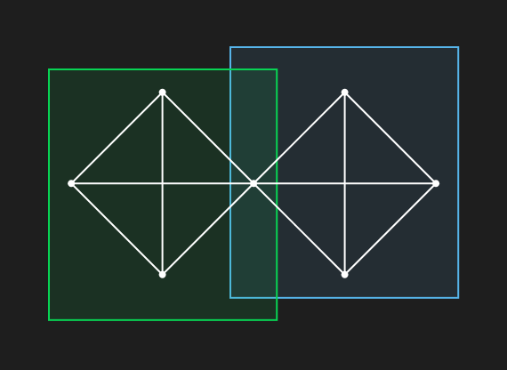
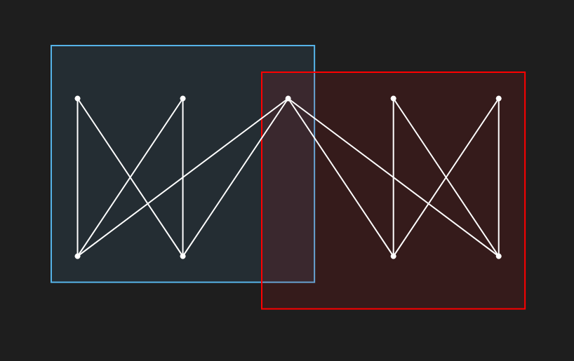
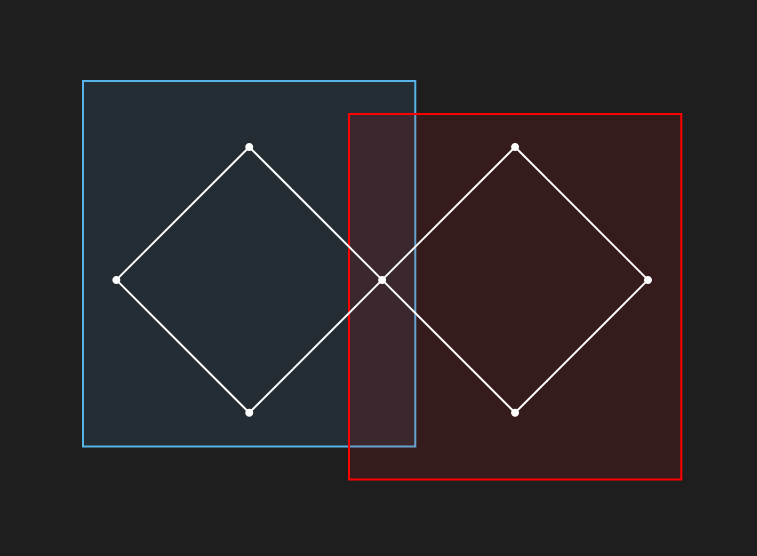
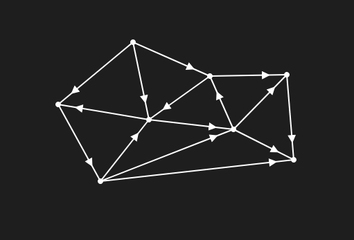

Lucas Isenmann
💼 Assistant Professor in Computer Science (ATER in french)
🏫 University of Strasbourg, France
✉️ lucasisenmann (at) unistra.fr
Research interests
- Graph theory: planar graphs, intersection graphs, tournaments
- Combinatorics: order (or Dushnik-Miller) dimension and intersection complexes
- Complexity: clusters in graphs, distance identifying problems
- Heuristic algorithms: graph clustering and biclustering
Publications
Submitted Papers
Correlation Clustering with Overlap: a Heuristic Graph Editing Approach
with Faisal N. Abu-Khzam and Sergio Thoumi
Submitted
ArXiv Preprint

Cluster Editing consists in adding and deleting edges so that the resulting graph is an union of cliques.
The problem is that this model does not allow data to be contained in several clusters.
We address this latter problem by allowing vertex to be split.
We develop heuristics for this Cluster Vertex Splitting problem and compare them to classical algorithms.
Journal Publications
Dushnik-Miller dimension of TD-Delaunay complexes
with Daniel Gonçalves
European Journal on Combinatorics, 2019
ArXiv Preprint
The Dushnik-Miller dimension (also known as order dimension) of a partial order is the minimum number of linear orders such that the partial order is the intersection of these orders.
A TD-Delaunay complex is the complex obtained from a set of points in dimension d such that a subset of these points is a face if and only the TD-Delaunay region of this point does not contain any point in its interior.
On the Distance Identifying Set meta-problem and applications to the complexity of identifying problems on graphs
with Florian Barbero and Jocelyn Thiebaut
Algorithmitica, 2018
ArXiv Preprint
International conferences
Bicluster Editing with Overlaps: A Vertex Splitting Approach
with Faisal N. Abu-Khzam and Zeina Merchard
IWOCA 2025
ArXiv Preprint
Conference Slides

Bicluster Editing with Overlaps consists in splitting the vertices of a bipartite graph and deleting or adding edges so that the graph becomes an union of bicliques.
On the complexity of 2-club Cluster Editing with Vertex Splitting
with Faisal N. Abu-Khzam, Tom Davot and Sergio Thoumi
COCOON 2025
ArXiv Preprint
Conference Slides

A 2-club is graph with diameter at most 2 (each pair of vertices are at distance at most 2).
2-Club Cluster Editing with Vertex Splitting consists in adding and removing edges and split vertices so that the resulting graph is an union of 2-clubs.
Domination in Diameter-Two Graphs and the 2-Club Vertex Deletion Parameter
with Faisal N. Abu-Khzam
ITCJS-FAW 2025
ArXiv Preprint
Conference Slides
Degreewidth : a new parameter for solving problems on tournaments
with Tom Davot, Sanjukta Roy and Jocelyn Thiebaut
WG 2023
ArXiv Preprint
Analysis of the Sybil defense of Duniter-based cryptocurrencies
FRCSS 2021

Duniter is a cryptocurrency wher each user is generating money on a regular basis.
To avoid Sybil attacks (i.e. that malicious users create fake accounts and gain more money), some graph theoritical rules.
We study the limits of these defenses.
On the approximation hardness of geodetic set and its variants
with Tom Davot and Jocelyn Thiebaut
COCOON 2021
HAL
Dushnik-Miller dimension of stair contact complexes
with Daniel Gonçalves
EuroComb 2019
The Dushnik-Miller dimension (also known as order dimension) of a partial order is the minimum number of linear orders such that the partial order is the intersection of these orders.
Discrete Morse theory for the collapsibility of supremum sections
Balthazar Bauer
ICGT 2018
ArXiv Preprint
Planar graphs as L-intersection or L-contact graphs
with Daniel Gonçalves and Claire Pennarun
SODA 2018
ArXiv Preprint
Möbius stanchion system
with Timothée Pecatte
LAGOS 2017
Thesis
From planar graphs to higher dimension
PhD Thesis supervised by Daniel Gonçalves
Defended in 2019
HAL
Softwares
Gracoon - An online collaborative graph editor.
Agreg-maths.fr
- A website collecting ressources for the agregation of mathematics in France.
PACE 2024
- An exact solver for the PACE 2024 challenge on the One sided Crossing Minimization problem
Book
L'oral à l'agrégation de mathématiques : une sélection de développements
with Timothée Pecatte
Éditions Ellipses